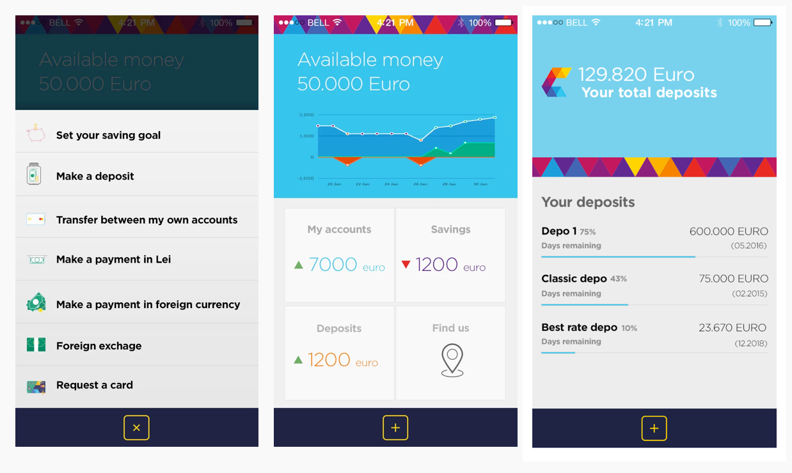
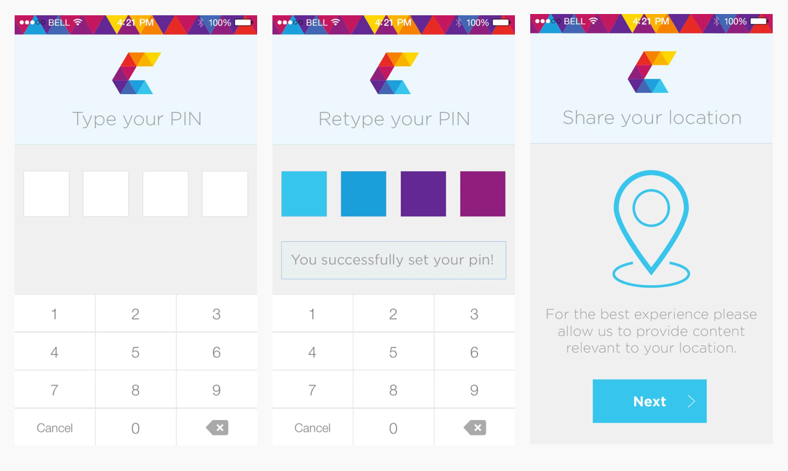
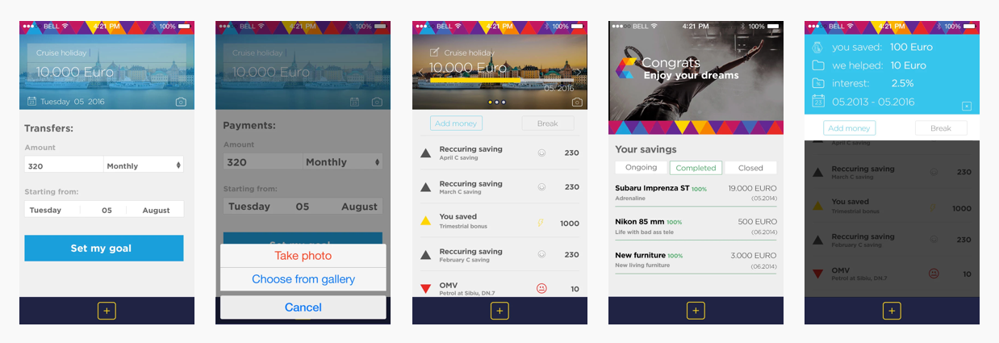

My roles: in-house UI designer, UX and project manager.
The project’s main challenge was to create a mobile banking app that would be interactive, simple and user-focused.
The app’s objective was to lead the user to smarter buying decisions, therefore to saving more money. At the end of the month, the saved money could be transferred to a savings or investment account.
We built in-app financial goals. We found that if the users can have a clear goal in mind and also visualize it, they are more willing to make it happen.
On top of the regular functionalities of a banking app (transferring and receiving money, checking the balance, communicating with the bank, requesting a loan), users had the possibility to create a savings account based on their own goals.
One time setup
For safety and compliance reasons we had to confirm login with a security token. A good compromise for us because in the beginning we had to use it for all transactions because you never know when a thief will pay your phone bill or sees that you can save some money.


Users: Ready? Set your goals. Go!
Numbers, money and banks are, for most people, either scary or boring. So we asked the users some key questions to help us along the road:
How often do you check your mobile banking app?
What is the first thing you’re checking when logging in?
What would make you happier when you checked your balance?
After many interactions and idea-testing we implemented the in-app financial goals.
Picture this. You are passing by a nice cruising boat, thinking that you always wanted to take some time off and go see the oceans. What if you could take your phone from the pocket, snap a picture and set up a financial goal on the spot for accomplishing this dream? You set an amount and, based on your buying behavior, the app does the math and works towards your goal.
The more a client uses his credit card, the more the app will learn from his behavior. So, for example, if a user’s monthly groceries are around $100, but in the last month he spent just $50, the saved amount will be automatically deposited to the financial goals set up in the app.

The more a client uses his credit card, the more the app will learn from his behavior. So, for example, if a user’s monthly groceries are around $100, but in the last month he spent just $50, the saved amount will be automatically deposited to the financial goals set up in the app.